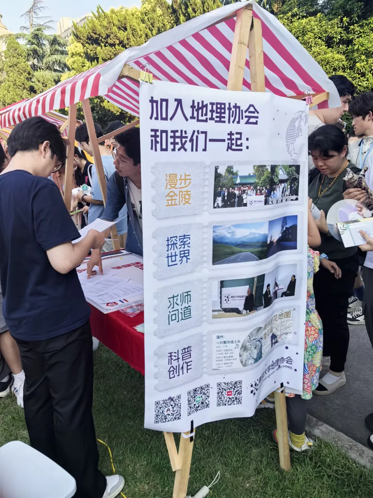
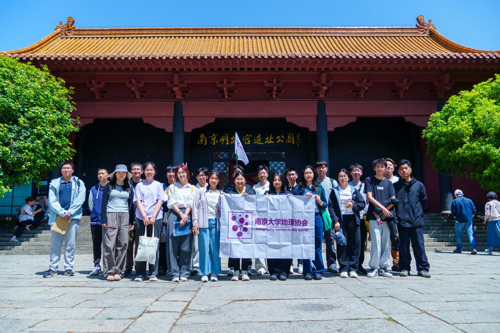

活动部
活动策划、路线设计与实地踩点，让每一次出发都有准备。
ABOUT NJUGA / 关于地协
南京大学地理协会成立于 2025 年。我们是一群带着“地理眼”行走的人。

玄武湖里藏着明代黄册库的遗址，浦口火车站的铁轨记录着跨世纪的移民史，钟山的草木之下，六朝古意与近代风云层层叠压。
这座城市还有很多图层没被打开。我们组织城市漫步、野外考察、学术讲座与地图制作，用空间的逻辑理解时间，用土地的肌理解读文明。
IN THE FIELD / 行走图集


OUR PEOPLE / 组织架构
活动策划、路线设计与实地踩点，让每一次出发都有准备。
推文、海报、摄影与新媒体，把我们看见的世界分享出去。
地理科普、学术讲座与 GIS 交流，让好奇心获得新的工具。
邀请嘉宾、联系伙伴，连接更多热爱地理的人。
物资、财务与后勤支持，为每一次活动提供保障。
JOIN US / 加入地协
欢迎所有专业、所有年级的同学。
不需要背诵山川河流，只需要愿意观察与探索。
在对应平台搜索名称或群号即可找到我们。具体活动的参与条件以活动通知为准。